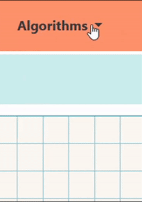
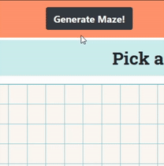
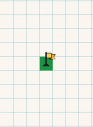
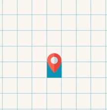

Tutorial
ABOUT THE PROJECT LEARN SYMBOLS WHAT IS PATHFINDING ALGORITHM? SELECT ALGORITHMS PATH-FINDING ALGORITHMS GENERATE MAZE START NODE MOVEMENT DESTINATION NODE MOVEMENT CREATING WALLS AND REMOVING IT FIND MY PROJECT
🍕 I have created this small project during 21-DAY LOCKDOWN(COVID-19) in India. This website can be used to visualize PATHFINDING ALGORITHMS like used in GOOGLE MAPS but on a very small scale.
🍕 In this website you can create walls which will act as an obstruction and use different algorithms to find the path and much more.
Start Node
Target Node
Unvisited Node
Visited Node
Walls
🍕 Pathfinding or pathing is the plotting, by a computer application,
of the shortest route between two points.
It is a more practical variant on solving mazes.
This field of research is based heavily on Dijkstra's algorithm for
finding the shortest path on a weighted graph.
🍕 Pathfinding is closely related to the shortest path problem, within graph theory, which examines how to identify the path that best meets some criteria (shortest, cheapest, fastest, etc) between two points in a large network.
🍕 Pathfinding is closely related to the shortest path problem, within graph theory, which examines how to identify the path that best meets some criteria (shortest, cheapest, fastest, etc) between two points in a large network.
🍕 ALGORITHMS
Different ALGORITHMS will work differently and every algorithm has its ups and downs. There are many algorithm out there but these are most used in graph traversals.

🍕 DFS(Depth first search)
The algorithm starts at the start node and explores as far as possible along each branch before backtracking. Not suitable for finding SHORTEST path.
🍕 BFS(Breadth first search)
Technically, Breadth-first search (BFS) by itself does not let you find the shortest path, simply because BFS is not looking for a shortest path: BFS describes a strategy for searching a graph, but it does not say that you must search for anything in particular.
🍕greedy-BFS(Best first search)
Searches for the best node to visit next and moves further. Not suitable for finding SHORTEST path.
🍕 Dijkstra Algorithm
Dijkstra's algorithm can be used to determine the shortest path from one node in a graph to every other node within the same graph data structure, provided that the nodes are reachable from the starting node. Dijkstra's algorithm can be used to find the shortest path.
🍕 A-star Algorithm
This algorithm is often used in computer science due to its completeness, optimality, and optimal efficiency. One major practical drawback is its space complexity, as it stores all generated nodes in memory But this algorithm is most suitable for finding SHORTEST PATH.
🍕 Recursive Division(HORIZONTAL SKEW)
This algorithm is used for generating random MAZE and different pathfinding algorithms can be used to solve the MAZE.

🍕 START NODE MOVEMENT
PRESSING [W,S,A,D] will move the START NODE in respective directions.

🍕 DESTINATION NODE MOVEMENT
PRESSING [↑,↓,←,→] will move the DESTINATION NODE in respective directions.
